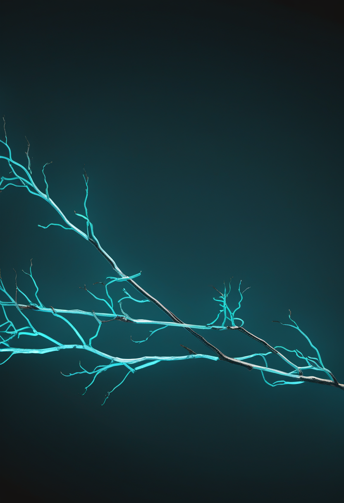
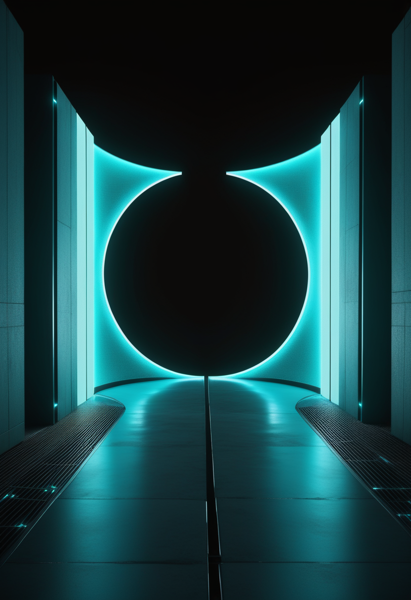
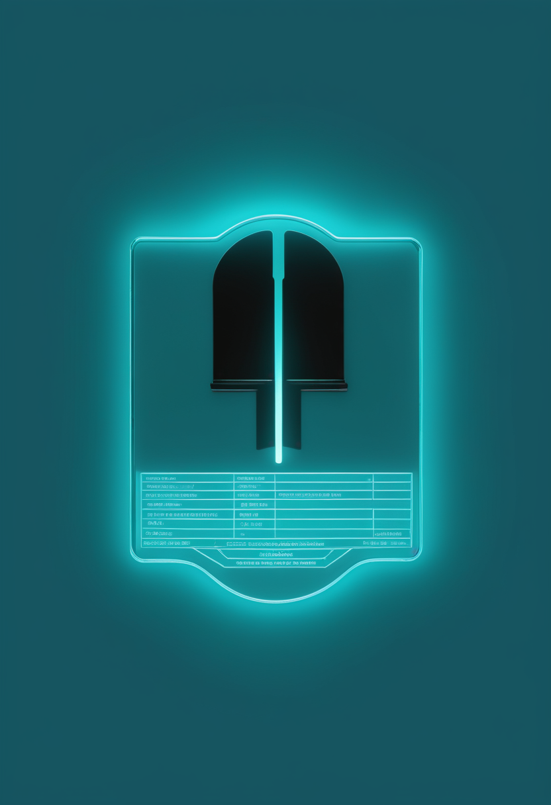
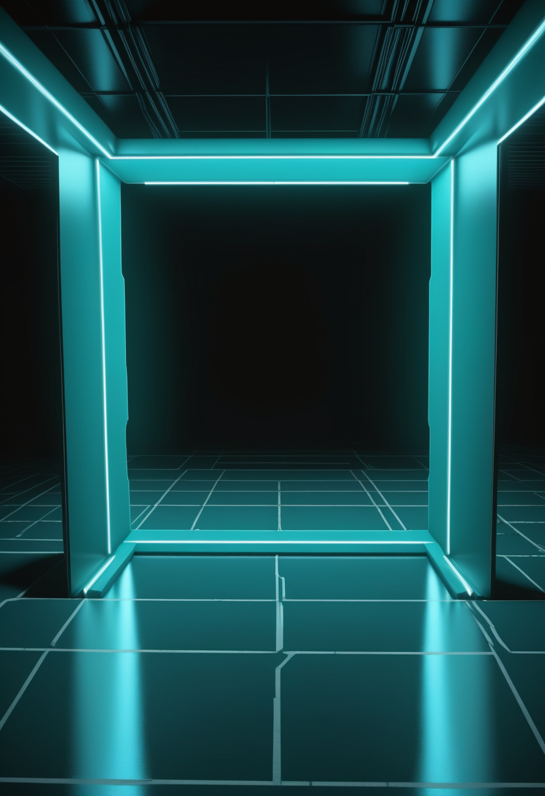

日曜日の便り。前号(9/26号)は、北キブ州の治療センターの病床が満床になったという「内側の熱」を伝えた。WHOが9月25日に発表した更新では、DRCのブンディブギョ型エボラは確定7,890例・死亡3,799人(前号比+70例・+20人、致死率約48.2%、本紙計算)になり、南ウバンギ州ブル(中央アフリカ共和国国境)とオー・ウエレ州ドゥング(南スーダン国境)で新規感染が確認された。流行が「数」から「国境」の局面へ動いた号である。命の章は、9月29日から広島で開かれる世界筋学会と、SMAの治療戦略が「SMNを増やす」「SMNに依存しない」の二正面に分かれてきたことを俯瞰する総説を伝える。自由の章は、完全埋め込み型BCIで実時間の自由発話に初めて成功したParadromicsと、中国の承認済みBCI「NEO」が7月に承認後初の処方に進んだことを扱う。基盤の章は上のエボラのほか、富山県が1999年の調査開始以来最も早くインフルエンザ注意報レベルに入ったこと、輸入の冷凍ブラッククラム(コンチャネグラ)を発端とする米国のA型肝炎の集団感染を届ける。畏敬の章は、NASAが新設した探査機クラス「Probe」の第1号PRIMA、落成10周年を迎えた中国天眼FASTの次期拡張計画、95年前の理論的予言「ベーテ弦」の初観測である。美の章は、AIが痛みを感じうるかを議論したバークレーの会議と、意識をめぐる一人称の確信と三人称の理論のあいだの隔たりを問う論文、意識なき福祉はあるかという反論を並べる。

前号(9/26号)は、北キブ州キタトゥンバの治療センター29床が満床になったという「内側の熱」を伝えた。WHOは9月25日、DRCのブンディブギョ型エボラが新たに2つの保健区へ広がったと発表した。南ウバンギ州ブル(中央アフリカ共和国と接する)、オー・ウエレ州ドゥング(南スーダンと接する)で新規感染が確認され、影響を受ける保健区は7州63か所になった(この総数自体は9/24号既報の水準)。全国の累計は確定7,890例・死亡3,799人(致死率約48.2%、本紙計算)で、前号の7,820例・3,779人(9月22日時点)から+70例・+20人。新規70例の内訳はイトゥリ31、北キブ31、オー・ウエレ6、バ・ウエレ1、チョポ1(合計70、本紙検算)。回復1,966人、隔離入院893人。接触者の追跡率は83.4%で、9/24号既報の84.5%からわずかに下がった。集計時点は9月23日とする報道と9月24日とする資料が併存する(要確認)。テドロス事務局長は、紛争と住民の避難が医療者の到達と接触者の追跡を難しくしていると述べた。流行の重心は、内側の病床から、外側の国境線へ移っている。
神経筋疾患の国際学会である世界筋学会(World Muscle Society、WMS)の第31回大会が、9月29日から10月3日まで広島で開かれる。プログラム委員会は5月に850件を超える抄録を審査し、会場では紙のポスター425枚と電子ポスター280件が展示される。8月には最新成果の追加受付(レイトブレイキング)も行われた。9月25日にはSareptaがデュシェンヌ型筋ジストロフィーのデータ発表を告知したが、SMAの主要企業(Biogen、Novartis、Roche、Scholar Rock)の発表予定は本号の締め切り時点で確認できていない。日本が会場となることで、salanersenの第3相に参加する国内施設や、日本の新生児スクリーニングの経験が議論に加わる機会になる(本紙の見方)。

SMAの治験登録情報を俯瞰したスコーピングレビュー「The evolving therapeutic landscape of spinal muscular atrophy」(PubMed 41789956)は、2020〜2025年に計画中または進行中の介入試験21件を特定した。流れは、SMNを増やす治療の改良(第2世代のアンチセンス核酸や遺伝子治療)と、SMNに依存しない治療(ミオスタチン阻害薬、神経筋の調節薬、イオンチャネル遮断薬など)の拡大という「二正面」に分かれている。本紙が伝えてきたISEMBYLD(ミオスタチン阻害の最初の承認例、9月11日FDA承認)は後者、salanersen(第3相3試験が進行中)は前者の代表にあたる。初期の成績は有望だが、長期の有効性は未確立だとしている。
承認薬が増えるほど、戦略の地図が要る。SMNを増やす前線とSMNに依存しない前線が並走し、ISEMBYLDは後者で最初に承認へ届いた。来週広島に世界の研究者が集まるのは、この二正面をどう組み合わせるかを話す場になる。
Paradromicsは9月14日、完全埋め込み型の皮質内BCI「Connexus」の最初の参加者が、実時間の発話と文字による意思疎通に成功したと発表した。参加者はミシガン州に住む運動ニューロン疾患の60代の女性で、研究者が選んだ文を写す課題を超え、自分で言葉を選び、自由回答の質問に答え、電話で孫と会話した。自由発話で最初に復号された文は「Okay, I have a lot to say(話したいことがたくさんある)」で、誤りはなかったという。同社は、声を出そうとする「試みの発話」と頭の中だけで言葉を作る「想像の発話」で異なる神経活動のパターンを見いだしたとしている。成果はFDAの治験機器適用免除(IDE)下の早期実行可能性試験によるもので、発話回復を目的とする完全埋め込み型BCIとして初めてIDEを得た試験である。速度や誤り率の定量値は今回の発表では確認できなかった。

復旦大学附属華山医院の毛穎教授のチームが開発した埋め込み型BCI「NEO」は、2026年3月に埋め込み型BCIとして世界初のクラスIII医療機器の承認を受けた。承認前の検証では全国11医療機関で32例を実施し、把持機能の臨床反応率は100%だったとされる。7月には華山医院で、承認後初の処方と埋め込み手術が行われた。前号までに伝えた医保局のBCI大会(9/26号)やAI脳波データの標準(9/25号)と合わせ、中国は承認・データ標準・支払いの三つを同時に整えつつある。
米国のParadromicsが自由発話という体験の質で進み、中国のNEOが処方という制度の運用で進んだ。異なる方式・異なる規制環境の2社が、同じ週に「臨床の日常」へ一歩ずつ入った。
WHOによると、DRCの累計は確定7,890例・死亡3,799人で、前号(9/26号)の7,820例・3,779人から70例・20人増えた。集計時点は9月23日とする報道と9月24日とする資料が併存する(要確認)。最も多いイトゥリ州は6,032例・2,764人。陽性者のうち1,966人が回復し、893人が隔離入院している。新たに感染が確認された南ウバンギ州ブル(中央アフリカ共和国国境)とオー・ウエレ州ドゥング(南スーダン国境)は、国境近くでの検出であり、WHOは越境感染のリスクが高まったとしている。接触者の追跡率は83.4%で、9/24号既報の84.5%からわずかに下がった。
富山県は9月25日、県内48医療機関の第38週(9月14〜20日)の定点当たり報告数が10.77人(前週7.67人)となり、注意報レベルを超えたと発表した。患者数は517人(前週368人)で約4割増(本紙検算で40.5%)。注意報レベル入りは昨季より7週早く、調査が行われている1999年以降で最も早い。県衛生研究所の所長は、インバウンドの増加が大きな要因の一つだと指摘している。前号で伝えた千葉県(同週14.36)に続く発表で、首都圏の外にも季節外れの流行が広がっている。厚生労働省の全国の第38週値は本号でも取得できなかった。
米CDCとFDAは、エクアドルから輸入された冷凍のブラッククラム(コンチャネグラ、ラ・セラニータ社の16オンス袋)を発端とする多州にわたるA型肝炎の集団感染を調査している。9月17日時点で4州から37例が報告され、情報がある37人のうち30人(81%)が入院した。死者は報告されていない。発症日は2025年7月30日から2026年6月23日にまで及び、患者の年齢は6〜40歳、54%が男性。地理的にはニューヨーク州27・ペンシルベニア州4・マサチューセッツ州3・ミネソタ州3に集中する。聞き取りに応じた患者の77%がセビーチェを、76%が生または加熱不十分な貝類を食べたと回答した。冷凍してもA型肝炎ウイルスは死なないため、凍結保存された貝類でもリスクが残る。
本号の3本は、いずれも「広がりの地理」を映す。エボラは国境地帯という外側の線に達し、インフルエンザは東京・千葉に続いて富山という第三の地点で最速記録を更新し、A型肝炎は輸入食品という別の経路で複数州に広がった。感染症の脅威は一つの震源地に留まらず、国境・地域・供給網という異なる地図の上で同時に動いている。
NASAは、遠赤外線で宇宙を観測する「PRIMA(Probe far-Infrared Mission for Astrophysics)」を、エクスプローラー計画内に新設した「Probe Explorers」の最初のミッションに選び、予備設計を進めるフェーズBに移行させた。承認されればプロジェクト費用の上限は12億ドル(打ち上げ費などを除く)で、2033年の打ち上げ、5年間の運用を目指す。口径約1.8m(5.9フィート)の望遠鏡で遠赤外線の深い探査を行い、ジェームズ・ウェッブ宇宙望遠鏡などの赤外線観測と電波望遠鏡の間の空白を埋める。実施段階(フェーズC)に進むかは、技術・計画・費用の審査で決まる。同じNASAのナンシー・グレース・ローマン宇宙望遠鏡は8月30日に打ち上げられ、9月下旬にL2周回に入りつつ90日間の試運転を進めている。
中国天眼FASTは落成から10年を迎え、全域の検修を終えて観測を再開した。FAST運行・発展センターの姜鵬主任・総工程師によると、FASTの周囲5km以内に口径40mの完全可動型電波望遠鏡を数十台(計画では64台)並べ、巨大望遠鏡を中心に中型望遠鏡が囲む世界唯一の合成開口アレイ「核心陣」を建設する計画で、完成すれば分解能は約200倍、感度は約2倍になる。完成は2030年ごろの見込みで、現在は国家プロジェクトとしての承認を求めており、2027年ごろに承認を得られるかが節目になるという。前号(9/26号)で伝えた最軽量の二重中性子星の発見に続き、中国の電波天文学が次の段階を描き始めた。
オーストリア・インスブルック大学のHanns-Christoph Nägerl氏らのチームは、1931年にハンス・ベーテが予言した「ベーテ弦」を超低温原子で観測した。絶対零度よりわずか数十億分の1度高い温度まで冷やしたセシウム原子の雲を、数千本の細い1次元の管に分け、原子どうしの相互作用を反発から引力へと精密に切り替えて原子を束縛させた。ベーテ弦は化学結合でつながる通常の分子とは違い、粒子間の相互作用だけから生まれ、1次元でしか存在しない多粒子の束縛状態である。成果はアムステルダム大学、ミュンヘン工科大学の理論チームとの共同でNature Communicationsに掲載され、9月中旬に発表された。
本号の3本は「次の10年の装置」と「100年前の理論」の組み合わせである。NASAはPRIMAを2033年に、中国は2030年ごろに核心陣を完成させる計画を示し、観測の空白を埋める競争が米中で並行して進む。一方インスブルックの成果は、量子の理論予言が実験装置の精度向上で次々と検証される流れを示す。
SF Standardは9月26日、AIのチャットボットが痛みを感じうるなら、働かせることは虐待にあたるのかという問いを議論した、バークレーでの会議を報じた。会場はLessWrongを運営する非営利団体Lightcone Infrastructureが所有する施設Lighthavenで、世界から100人超が集まった。参加者は哲学者、神経科学者、大手AI研究所の社員、動物の権利の活動家、そして独自の実験を行うRedditユーザーまで幅広い。意識やAI福祉をめぐる議論が、学術論文の外側で実際の会議の場に広がっていることを示す報道である。

Preston Lennon氏の論文「How Seriously Should We Take AI Welfare? Constraints From the Epistemology of Consciousness」が、Philosophy and Phenomenological Research 113巻2号(441〜452ページ、2026年)に掲載された。近い将来のAIが意識科学の有力な理論が示す性質を持ち、意識があれば福祉の主体になる、という議論に対し、Lennon氏は、自分自身の意識についての一人称の確信と、意識科学による三人称の理論的な信念との間には、正当化の度合いに大きな隔たりがあると論じる。神経科学の理論から意識の指標を導く手法に、その指標をどこまで信じてよいかという根本的な制約を突きつける論文である。
Walter Veit氏はAsian Journal of Philosophy 5巻18号(2026年)の論文「Is consciousness required for AI welfare?」で、人工の言語エージェントは現象的意識がなくても福祉を持ちうるとするGoldstein氏とKirk-Giannini氏の議論に反論した。Veit氏は、両氏の議論は意識が福祉に不要であることを示せていないとし、AIの福祉の要件として意識(より正確には感覚性、sentience)を引き続き扱うべきだと主張する。AIの福祉をめぐる議論が「意識はあるか」と「意識がなくても配慮は要るか」の二つの道に分かれていることがわかる。
会議の現場では「痛みを感じるか」という直観的な問いが共有され、論文の世界では「その判断をどこまで信じられるか」(Lennon)と「意識は福祉の必要条件か」(Veit)が争われている。人間のデジタル化を考えるうえでも、複製された心の福祉を誰がどの基準で判断するかという同じ問いが待っている。
日曜日の便り。WHOが9月25日に伝えた更新で、DRCのブンディブギョ型エボラは確定7,890例・死亡3,799人(前号比+70例・+20人)となり、中央アフリカ共和国と接する南ウバンギ州、南スーダンと接するオー・ウエレ州で新規感染が確認された。前号までは北キブ州の病床が満床になる「内側の熱」を伝えたが、本号は流行が外側の国境線に触れたことを伝えた。日本では富山県が1999年の調査開始以来最も早くインフルエンザ注意報レベルに入り、米国では輸入の冷凍ブラッククラムを発端とするA型肝炎の集団感染が4州に広がった。命の章は、9月29日から広島で開く世界筋学会と、SMA治療が「SMNを増やす」「SMNに依存しない」の二正面に分かれてきたことを俯瞰する総説を伝えた。自由の章は、完全埋め込み型BCIで実時間の自由発話に初めて成功したParadromicsと、中国のNEOが7月に承認後初の処方に進んだことを扱った。畏敬の章は、NASAの新探査機クラス第1号PRIMA、落成10周年の中国天眼FASTの次期拡張計画、95年前の理論的予言「ベーテ弦」の初観測を届けた。美の章は、AIが痛みを感じうるかを論じたバークレーの会議と、意識をめぐる認識論的な制約、意識なき福祉への反論という三つの視点を並べた。
では、また明日の朝に。 — JaH